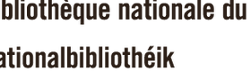

Encadreur d'art à Luxembourg
L'encadrement sur mesure, les cadres standards, le tirage photo, la restauration de tableaux, la dorure et une galerie d'art, réunis en un même lieu, à Hollerich.
Cadres standards
Aluminium ou bois, prêts à l'emploi.
Cadres sur mesure
Conçus selon vos goûts et votre œuvre.
Tirage photo
Petits et grands formats.
Click & Collect
Prêt en 1h, à emporter à l'atelier.
Un savoir-faire transmis depuis 1972
La Maison Neumann encadre et restaure à Metz depuis 1972. Après plus de 30 ans d'expérience, Kathia Neumann a souhaité développer ce savoir-faire au-delà des frontières en créant une antenne à Luxembourg.
Particuliers, artistes, collectionneurs, architectes, décorateurs et institutions y trouvent un accompagnement personnalisé, du petit cadre aux très grandes pièces.

Votre devis, tout de suite
Composez votre cadre en ligne et obtenez un prix instantané, sans engagement.
Ouvrir le configurateurDes institutions, des marques et des artistes nous confient leurs œuvres



Du petit cadre au format monumental
Nous encadrons et installons sur site des œuvres de très grandes dimensions, jusqu'à environ 3 mètres, comme ce panneau mural réalisé pour les bureaux de Deloitte.

On peut tout encadrer
 Médailles & décorations
Médailles & décorations Cadres végétaux
Cadres végétaux Objets (couverts, souvenirs)
Objets (couverts, souvenirs) Porte-bonheur & petites pièces
Porte-bonheur & petites piècesIls nous ont fait confiance, ils en parlent
« Une adresse de confiance pour tous vos travaux d'encadrement. Mes œuvres ont toutes été parfaitement mises en valeur grâce aux conseils et au travail des artisans. »
« J'ai confié l'agrandissement et la mise en cadre d'une photo, je suis ravi du résultat. Travail soigné, de très haute qualité, service impeccable. »
« Charmant accueil dans un cadre chaleureux, conseil personnalisé et professionnel. Vaste choix de cadres sur mesure, finition de qualité. »
« Parfait du début à la fin. Un travail de grande qualité, de très bons conseils et une vraie attention du détail, tout en maîtrisant le coût final. »
« L'encadrement de notre lithographie est juste parfait. Votre savoir-faire a sublimé l'œuvre. Merci pour la qualité et le soin des finitions. »
« J'en ai rêvé et la Maison Neumann l'a fait ! Le reste est du grand art. Merci à Katia et à son équipe. »